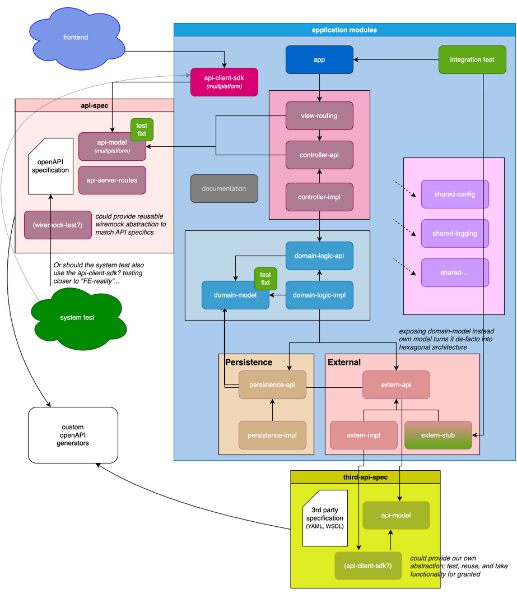
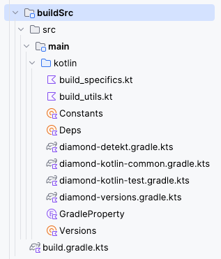
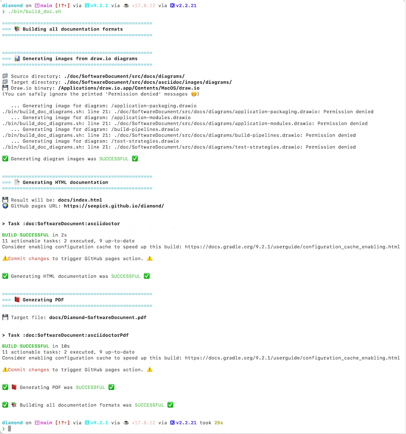

"Given a very long time (far, far away) and an exorbitant amount of persistent pressure, and even out of the most ordinary dirt, a precious diamond will be formed."
The project’s website is: https://github.com/seepick/diamond
| Download this version as a PDF: https://seepick.github.io/diamond/Diamond-SoftwareDocument.pdf |
The build for this document (using AsciiDoc) was triggered on Saturday, 13. December 2025 at 21:51 - enjoy :)

About
This project is a state-of-the-art prototype of a backend service, which can be used as a laboratory to gain experience (elaborating further on this proof-of-concept), a base for technical decision making and a template for future reference.
This document describes not only the specifics of this implementation (a tangible, hands-on, experience-based source of information using a concrete example instead of hypothetical theorization), but also the underlying principles, representing best practices. It is tailored to a technical prototype, thus there will be little to no mentioning of what could be expected for a regular service with business features and production relevance. Think of business concepts and rules, IT system landscape, API documentation, and much on the operational side (DevOps/CICD, releasing, performance, tracing, monitoring, alerting). It ends with an outlook on open doings and a future vision on how to shape also the broader picture of integration, deployment, monitoring, etc.
Decision Documentation
We use ADRs (Architecture Decision Records) to document important architectural and technical decisions made during the development of this software project.
For more explanation what ADRs are, please read: https://github.com/seepick/diamond/blob/main/doc/decisions/README.adoc
Chapter Overview

1. Architecture
Let’s have a look at the application from the broadest view possible while still focusing on the application itself (no system landscape with external services).
1.1. Overall Guiding Principles
To come to a decision, we need basic values (principles) to refer back to, to check whether an option is aligned (or not) with those values. Thus "guiding" us into the right (value-appropriate) direction. This is by no means a complete list, nor is the order of any particular importance; it’s just a quick beginning, an inspiration…
-
Clean code, clean architecture.
-
Single responsibilty; one, and only one thing well.
-
Clear defined (and clean) interfaces.
-
Hiding internals, exposing only what’s relevant.
-
-
Divide and conquer; as small as possible, as big as necessary.
-
Reuse, externalize as much as possible infrastructure code; focus on business features.
-
No classpath pollution; minimal as possible (Gradle’s
implementationvsapidependency scope).
Based on some KPIs:
-
Lead time of X days until feature available.
-
High quality, many tests, low bugs.
-
API response times of Xms (performance tests).
-
Build time max X minutes locally; build pipeline max X+ minutes.
1.2. Layering
How the application can be split and grouped with different aspects in mind, each with their own pros and cons. What kind of logical layering (represented by a consistent naming pattern) and technical subdivisioning is used. Whether a subdivision is implemented as a submodule (same VCS repo), or an external dependency (own VCS repo).
1.2.1. Packaging

Given the usecase of having to add a new field to a specific domain. All three layers need to be touched: view, logic, and persistence for that domain.
Three approaches are possible:
-
Technical Packaging
-
This is what we usually do; down to the extreme of packages like
exceptionor evenenum. -
In terms of single responsibility this is doubtful (simply looking at the import statements).
-
When touching one aspect, all layers (with all domains), basically the whole application was changed (no caching/reusing of already built modules).
-
-
Domain Packaging
-
Java’s package/namespace idea of reversed DNS names was initially intended for domain packaging.
-
E.g. When a feature login needs to be implemented, only classes within the domain package
authwill be touched (view, logic, and persistence in one package). -
But now the whole classpath is polluted with all kind of different technical aspects (view controller next to DB repositories)…
-
-
Combined Approach
-
To split it up and we gained the best of both worlds; with some added complexity.
-
Final thought:
-
This principle not only applies to packages, but also to services; in the big and in the small.
-
There is no absolute right way of doing it; any solution will have pros and cons.
-
Often the vertical slice is represented as a microservice, thus within it the domain is already split (it could be split even further though; too much?), thus only tech packaging relevant.
-
Tech split within domain split.
-
-
And always then the need (if no horizontal layer) to create a shared library for each layer…
1.2.2. Submodules
Each architectural layer is composed of several (sub-)modules (in Gradle terminology it’s called a sub-project actualy, but we prefer Maven’s sub-module term).

-
app— the main entry point to start up the application; has a dependency on all submodules (incl. impls) and wires the dependency injection context; reads the configuration and starts the webserver. -
view— container for all HTTP API related routes and controllers-
view-routing— the endpoint definition and reading of relevant data from the HTTP request -
view-model— No! as those are (OpenAPI) generated and oustourced -
controller-api— abstraction of client requests (free of webframework references, potentially easier to test; see open question section for details) -
controller-impl— transforming view-models into domain-models (OpenAPI spec)
-
-
domain`— container for business logic, free from any framework/tech-references-
domain-model— shared representation of a domain object and errors -
domain-logic-api— interfaces/entry points for controllers -
domain-logic-impl— actual business features
-
-
persistence— database abstraction access layer-
persistence-api— repository interfaces -
persistence-impl— DBMS agnostic queries and schema definition; runs DB migrations (actuallypersistence-exposed) -
persistence-stub— No! useless as already in full control and high speed with in-memory DB
-
-
extern— container for third party access (HTTP, SFTP, MQ, …)-
extern-api— simplified interfaces exposing data via domain-models -
extern-impl— configurable technology specific clients -
extern-stub— used during testing (and local development) -
extern-model— No! as this needs to be generated and outsourced. (YAML, WSDL)
-
-
shared— container for common infrastructure code (can be potentially outsourced over time)-
shared-common— the obligatory language/standard library extensions -
shared-test— framework extensions, fixtures, logging -
shared-logging— programmatic logback configuration (code > markup) -
shared-config— custom functionality for sophisticated configuration management -
shared-xxx— more to come…
-
-
itest— integration tests with Cucumber/Gherkin (BDD) not leaving application boundary (full control and lightning fast) -
client-sdk— easy to use API SDK (multiplatform porject, reusable for JVM and JS/TypeScript, thus frontend)
External libraries (own repository), yet maintained by us:
-
api-SDK— containing the OpenAPI specification and generated sources (see chapter Code Generation)-
api-model— entities supported by specific serialization framework (usable byclient-sdk) -
api-server-routes— webframework specific code to tie the contract to the implementation
-
-
<THIRDPARTY>-SDK— external systems (OpenAPI/WSDL) own-written client SDK (outsource generated code) -
etest— end-to-end system tests residing outside to decouple it from the implementation; only gets environment base URL for blackbox access -
openapi-gen— custom OpenAPI generators (resides in shared for now, needs to be externalized)
1.2.2.1. Module Naming Convention
In general we choose one or two short, meaningful (no abbreviations), pronouncable words which capture the essence.
There are two ways of naming submodules:
-
Have a simple naming convention:
/domain/impl-
The sub-module’s name itself will not be unique across the whole application, leading to potential build problems (name clash).
-
E.g. the assembled JAR file will be named
impl.jar, thus not unique.
-
-
Encode the super-type in the sub-type, as in
/domain/domain-impl-
This seems redundant at first, but leads to a necessary unique module name.
-
1.2.3. Client-SDKs
What is it?
-
A (provided) client library to integrate a service (backend, "extern")
-
It contains:
-
DTO models; serializable data transfer object.
-
API Client interfaces; either ready-to-use controllers or simply header interfaces.
-
Reusable wiremock preparations (contract alignment)
-
Reusable test instances for property based testing.
-
It is preferrably available in all used client languages.
-
Different client technologies exist; in different versions.
-
Why?
-
It reduces integration-effort (code to write and maintain).
-
It takes risk of writing integration tests based on wrong assumptions (contract).
-
Capturing behavior in a formal way which can be tested against.
-
Best Practices:
-
Every service should provide such a SDK; if not, implement ourselves.
-
The code resides in its own repository; separately built and versioned.
-
-
We maintain a client-useful (confirmed benefit) SDK for our API ourselves.
-
We potentiialy used it ourselves in tests, http-controllers, etc.
-
1.2.4. Layer Granularity
Should the modules view-routing and
view-controller-api/impl be separate or merged?
|
Status: Proposed |
Separate
-
Adds complexity, more code to write; (already heavy due to route - controller - domain - persist/extern)
-
Have to change the controller interface, the controller impl, and potentially register Koin bean, …
-
-
Adding another abstraction layer leads to more clean architecture (enforced).
-
The
view-routeonly purpose is, to interact with the web framework specifics, and leave that context immediately. -
Very easy to (semi-unit) test routes (only mock controllers)
-
-
The biggest need-driven reason is from testing point of view:
-
Tests cutting into controller, thus no HTTP request/response mechanism is involved
-
Making testing extremely fast (runtime performance and development time) and simple (plain code).
-
From Cucumber point of view this is an implementation detail (interchangable, spec stays robust).
-
-
It’s simpler, it’s more focused, faster, … but less close to "reality" (higher risk!)
-
It requires complementary tests (route only tests) and integration test of those layers.
-
-
Merged
-
faster development; less code/complexity
-
unit (integration, as they use ktor) test for routes will be heavier.
Decision
-
If the integration tests use HTTP (and not the controllers), then the modules should be merged (less strict but faster).
-
Otherwise it would add complexity without using its the benefits.
-
1.3. Technology Choices
JVM based, not .NET based, because "Java is dead, long live Java". The (Java) ecosystem is fantastic, opensource, mature, and stable. The (Java) programming language is old and outdated. Other languages are nowadays running on the JVM, like Kotlin and Scala. Especially Kotlin is fully interoperable with Java and thus all the tools can be reused and for developers a smooth migration path exists.
1.3.1. Programming Language
Which programming language to use?
|
Status: Proposed |
Context
-
We prefer a JVM tech stack, thus mainly Java or Kotlin (no Scala, Clojure, …)
-
Non non-JVM language like Go, Rust, Python, …
-
C# is a sophisticated option and used widely though.
-
-
A natural evolution from plain Java, adding Lombok, and then to Kotlin.
-
Using Lombok is an indication we want Kotlin (and Guava’s immutable data structures).
-
Native data classes support, properties, prop-initializing-ctor; from final to val.
-
Options
Main points for Kotlin:
-
Interoperability
-
Allows smooth migration (Java and Kotlin live side-by-side)
-
Always possible to fall back to java code and "java native libs" (could use Spring)
-
-
Concise (less boilerplate, less verbose); cleaner/less code, faster development
-
Null safety built into the type system
-
Extension functions
-
Functional (functions as first-class citizens; higher-order functions)
-
Immutability by default (collections)
-
JetBrains supported, tooling (IDE!), ecosystem
Side points for Kotlin:
-
Concise lambda definition (custom DSLs)
-
Type inference, smart casts
-
Bypass type erasure with inline functions and reified generics (have type parameter available at runtime, no more typeOf magic)
-
Default and named parameters
-
String templating
-
Coroutines (async)
Some things Java was able to catch up a bit (yet sometimes a bit poorly implemented): lambdas, method reference, pattern matching, records.
Downsides for Kotlin:
-
Not as popular (tools, libs, documentation, experience/skill)
-
Compiler is not as highly optimized (fast) as Java’s
-
100% interoperable regarding the language itself, but with some (older) frameworks there are some incompatibilities in paradigm
Decision
-
Kotlin is a modern and Java-familiar language, supporting the whole Java ecosystem (safe bet), allowing safe and rapid development.
-
It gets more and more popular, additionally with JetBrains as the company behind it, major support.
1.3.2. Web Framework
1.3.2.1. Webframework
Which modern, non-intrusive web framework to use for communicating JSON-RPC-over-HTTP (a.k.a. ReST)?
|
Status: Accepted |
-
The web framework is usually also dictating a bigger part of the application: dependency injection, configuration, etc.
-
Especially with heavy-weight frameworks like Spring Boot and the enterprise implementations are covering more than just "being a fancy servlet".
-
-
We need something more lightweight, fast, highly configurable (test needs rewiring), and modern.
Options
-
Spring Boot/Web
-
Most common in JVM world.
-
very opinionated (convention over configuration like)
-
Very much like maven, “super strict, either our or no way”
-
Its pro is its con: beneficial at beginning, but no power user custom things (fighting the convention)
-
Difficult to start only parts of the application (testing), in isolation (parallel testing; @DirtiesContext), due to classpath scanning and annotations usage.
-
-
Ktor
-
Lightweight, modern (coroutines), multiplatform (typescript), server and client.
-
Less popular (getting better), less mature, smaller community (documentation).
-
Much needs handwritten; some good (code, control), some bad (OpenAPI generation)
-
Everything is code (instead of annotations), there is a beautifully simple way to do it, and so extremely flexible, that every test strategy we can imagine can be implemented.
-
-
JEE JAX-RS
-
Jersey, ReST-easy, … the big ones.
-
-
Quarkus
-
More popular, more lightweight than JEE implementations; cloud native.
-
Spring and Kotlin?
-
more and more attention from Spring towards Kotlin; more support
-
see kofu for spring experimental support to make it look like ktor
-
also interesting: Spring Kotlin DSL
Conclusion
-
We use Ktor, fitting in the tech-stack for a modern, safe, rapid development approach.
healthRouting.kt
from the view-routing module
package nl.uwv.smz.diamond.view.routing
import io.ktor.server.application.Application
import io.ktor.server.response.respond
import io.ktor.server.routing.get
import io.ktor.server.routing.routing
import nl.uwv.smz.diamond.view.controllerApi.HealthController
import org.koin.ktor.ext.inject
internal fun Application.installHealthRouting() {
val controller by inject<HealthController>()
routing {
get("/health") {
call.respond(controller.fetchHealthReport())
}
}
}1.3.3. Persistence Technology
Which storage system to use to persist data?
|
Status: Proposed |
Context
-
We need to choose a persistence technology for our application.
-
A clear distinction between the needs for production vs test/development (local startup).
-
We choose for a conventional relational database…
-
No NoSQL store (MongoDB), event datastore, or even an in-memory cache… no elasticsearch in front for speedy queries.
-
Requirements
-
Production DB:
-
Available in corporate environment.
-
If performance (searching/filtering) is an issue, maybe an elasticsearch index could be useful?
-
-
Test/Dev DB:
-
Lightweight (in-memory)
-
Fast startup and execution time
-
No setup costs (installing, configuration, etc)
-
Options
Production:
-
Oracle
-
Postgres, MariaDB (MySQL)
-
MS SQL Server
Test/Dev:
-
H2
-
HSQLDB
-
Sqlite
Decision
-
Postgres for production: simple, yet powerful; well known, free
-
H2: very common, mature, free, fast, lightweight
2. API Design
Let’s talk about everything relevant for a common HTTP, ReST-like webservice.
2.1. Common Features
-
We only offer
application/jsonby default; no alternative representations needed, no content-negotiation.
2.1.1. Sorted Resources
How to specify a sorting HTTP request for listed resources?
|
Status: Proposed |
Context
-
A query parameter needs to be provided to sort, calling it
sort,sortedByororderBy.-
E.g.
sort=author,title— multiple sort fields supported
-
-
Sort direction ascending (default) or descending
-
E.g.
orderBy=author asc,title desc— adding direction as a suffix to the field -
Alternatively symbols plus/minus prefixed:
orderBy=+author,-title
-
Error Handling
Ensure the client gets sufficient information in case of an invalid request.
{
"error": {
"code": "InvalidOrderByExpression",
"message": "The property 'author' in the orderby expression is not sortable",
"details": [
{
"code": "UnsupportedSortProperty",
"target": "author",
"message": "Sorting by 'author' is not supported. Supported sort properties are: ['id', 'title']"
}
],
"target": "orderby",
"internal": {
"trace-id": "00-d24f899d9c8a5a428fddd39399e7f58e-5c8a8949fcdd9a42-01",
"timestamp": "2024-02-20T15:30:45.123Z",
"request-id": "123e4567-e89b-12d3-a456-426614174000"
}
}
}Decision
-
Go for a simple
sort=+auther,otherimplementation.
Links
2.1.2. Paginated Resources
How to specify a paginaged request/response via HTTP?
|
Status: Proposed |
Context
-
We need to support a pagination mechanism for the client to access big datasets in chunks.
-
The request (query) parameters need to be defined, as well as the payload metadata (with possible resource links).
Options
Conventional offset approach:
-
named skip and take (shorter, each 4 letters), or (more commonly) offset and limit
-
based upon this, one can easily implement a page-based pagination (could support both actually)
-
this approach is actually bad for big datasets, as the DB has to scan through all rows (limit; total count)
Others approaches:
-
Keyset pagination, seek method
-
for example via
since_idand a limit/take param -
only for IDs with auto-increment, or timestamps
-
-
Time-based pagination
-
for analytics/log monitoring only
-
-
Cursor-based pagination
-
like a bookmark, a backend-determined value not necessarily linked to any data fields (contrary to keyset)
-
more complex to implement
-
also return the "next cursor" in the response
-
Best Practices
-
clearly document pagination mechanism (openAPI, provide examples)
-
don’t implement pagination for: A) small datasets and B) fast changing data
-
use standard names
-
provide page metadata:
-
total pages, current page
-
total items, items in page, size (request page size)
-
has more
-
provide navigation _links (HATEOES), next/previous/first/last
-
either in metadata payload
-
or in header: Link: <http://localhost:8080/api/books/paged?page=1&size=10>; rel="self"
-
-
-
reuse test logic: each paginated endpoint needs to have the same set of tests
Questions
-
restrict to a maximum take/limit param?
-
how strict or lenient to be? (bad request)
-
negative numbers (skip -1, take 0)?
-
take more than existing (page > totalPages)
-
-
either use, or at least get "inspired" by: https://github.com/perracodex/exposed-pagination
Proposal
Use the conventional approach with skip/take and keep the response KISS (no
links).
Resources
2.1.3. Filtered Resources
How to specify a filter request via HTTP?
|
Status: Proposed |
Context
-
The user (via the frontend) needs to be able to filter bigger data sets.
-
Different fields have different data types and require type-specific operators.
-
Types: string, int/float (number), boolean, list/set/enum
-
Fields can be nested with a dot-syntax.
-
-
operators:
-
general: equal, not equal
-
string: (not)contains, starts/ends (simple regexp?)
-
numeric: greater/lesser (or equal); between is done by adding both ;)
-
enum: in
-
-
operators are all in conjunctive form (coupled by AND), otherwise too complex
-
explicit handling of invalid requests
-
e.g. if unknown field/operator, suggest possible ones
-
Proposal
-
GET /crystals?author=eq:Peter— a simple equals filter -
GET /crystals?weight=gt:3&weight=lte:10— between via combined operators -
GET /crystals?author.address.streetNumber=eq:42— nested fields -
GET /crystals?state=in:FOO,BAR
Investigate on (de-facto) industry standards (JAX-RS, SpringBoot), things people are used to, and client libraries exist (Angular, React).
Alternatives
Passing the whole filter query as a single parameter:
-
GET /crystals?filter=author eq 'Peter'
Or split each term of the query into explicit pieces (verbose, probably not maintainable):
-
GET /crystals?filter[0].property=owner.name&filter[0].operator=equals&filter[0].value=Peter
A radically different approach would be to turn it into a POST (or PUT) request and provide a (JSON) request body. Ratio: It feels like we are trying to squeeze a proper payload into query parameters (feels wrong, a smell we are misusing something).
Resources
2.1.4. Endpoint Versioning
How to support multiple API versions simultaneously?
|
Status: Proposed |
Context
-
When backend and frontend deploy independently (which is supposed to be), they might run out of sync with the contract.
-
There needs to be a way to introduce breaking changes yet not break the clients.
-
The API needs to be able to be versioned (specified by the client), behaving in different ways based on the version used.
-
-
Also think of a deprecation strategy, the roadmap needs to be easily visible (communicated, dashboards) for the clients.
-
E.g. tag OpenAPI spec as deprecated; add warnings in generated code possible.
-
Keep track (logging, dashboards) of usage of each version by clients, to know when it is safe to turn it off (or nudge clients).
-
Options
-
Either using the accept header to specify a custom mime type
-
E.g.
Accept: application/vnd.diamond.crystal.v1+jsonandContent-Type: … -
This keeps the URLs clean, and metadata is stored properly in headers as supposed to be.
-
But not so obvious at first; also requires additional logic to be implemented.
-
-
Or encode the version in path:
GET /api/v1/crystals(this is the more common approach)-
Explicit, flexible, simple.
-
Out-of-the-box supported by caching.
-
Decision
-
Encoding the version in the path. More common, simpler.
Links
2.2. Secured Endpoints
How is authentification (username/password) and authorization (rights/role-checking) handled to secure endpoints properly?
|
Status: Draft |
Options
-
IAM/LDAP
-
Central security auth-gateway in front (federated-login)
-
A reverse proxy (nginx) for auth (more complex pipeline)
-
Services only receive an already verified user ID header (auth-agnostic); esp. when 2+ services necessary
-
Especially in a multi-service setup non-negotiable (DRY; or shared-sec lib?!)
-
Simplifies code a lot, less code = fewer bugs
-
Faster build time ("IAM policy seeding" can take a lot of time)
-
Easier test setup (happier testers)
-
Separation of concerns: make the "children slimmer/lighter"
-
Endpoints are configured centrally (?); the obligatory "auth matrix" ;)
-
-
OAuth2 or JWT?
Proposal
An auth-gateway upfront, not the service itself. More research needs to be done…
2.3. OpenAPI Specification
-
The spec is the source of truth, the holy contract
-
Especially multiple consumers (always at least 2: 1x FE and testers)
-
-
OpenAPI generators can keep contract in sync with code
-
Show SwaggerUI as endpoint (display both UI and yaml-spec); consumer convenience.
3. Application
Zooming in a bit from the architectural view into the internals of the application. Libraries used, build system, application configuration and documentation.
3.1. Techstack
Library choice guidelines:
-
Kotlin-idiomatic (DSLs, functional)
-
Asynchronous (native coroutine support)
-
Alive project (recent commit to repo)
-
Non-intrusive (clean code, no coupling)
-
Code over Config (incl. annotations)
As a golden rule, there should never be any non-production dependencies (test, stubs, localdev, etc like H2) in production code. Instead activate profiles which customize the build (dependency tree). E.g. for tests (presistence-tests and itests) different wiring
3.1.1. Libraries
object Deps {
val arrowCore = "io.arrow-kt:arrow-core:${Versions.arrow}"
val jsch = "com.github.mwiede:jsch:${Versions.jsch}"
object database {
val h2 = "com.h2database:h2:${Versions.h2}"
object exposed {
private fun make(artifact: String) = "org.jetbrains.exposed:exposed-$artifact:${Versions.exposed}"
val jdbc = make("jdbc")
val datetime = make("java-time")
}
}
// ...
}3.1.1.1. General
- Gradle
-
Build system to run tasks such as compiling, testing, and packaging ("newer Maven", using its sophisticated dependency management).
- Kotlin
-
General purpose programming language running on the JVM ("newer Java", fully interoperable).
3.1.1.2. Web
- Ktor
-
Lightweight web framework ("newer Spring WebMVC") and client.
- Serializationx
-
Kotlin specific JSON serialization (instead of Jackson).
3.1.1.3. Persistence
- Exposed
-
Typesafe SQL library (not a full fledged ORM like JPA/Hbernate).
- Liquibase
-
Database migration library using XML.
- H2
-
As an in-memory database for testing and local development.
3.1.1.4. Test
- Kotest
-
Modern flexible testing framework integrating with the JUnit engine ("newer JUnit")/
- Cucumber
-
BDD framework to write integration tests with Gherkin.
- Kover
-
Test coverage tool, generating JaCoCo compatible XML reports.
- Mockk
-
Kotlin-idiomatic mocking framework.
- WireMock
-
Complex backend call mocking.
- Testcontainers
-
To locally spin-up docker containers for system integration tests.
3.1.1.5. Quality
- SonarQube
-
Quality gate for code analysis, test coverage and more.
- Detekt
-
Static code analysis together ("newer CheckStyle")
- Ktlint
-
Auto-formatter, integrated via Detekt.
- OWASP
-
Vulnerability dependency scanner.
3.1.1.6. Supportive
- Koin
-
Dependency injection, actually service locator, framework ("newer Spring Framework", neither classpath scanning nor annotations use).
- Arrow
-
Functional library used for better exception handling via
Either. - Hoplite
-
Typesafe loading of application configuration.
3.1.2. Library Choices
3.1.2.1. Database Access Library
Which (JDBC) library to use to access entities from the database in a convenient way?
|
Status: Accepted |
Context
-
We need a way to access relational database from Kotlin code.
-
We talk about DB access (as in JDBC), not a full ORM solution.
-
-
Requirements:
-
Needs to be type-safe (no "stringly-typed" expressions)
-
Little/no code generation magic (explicit, in control, safe and stable)
-
Kotlin-idiomatic (coroutines, DSLs)
-
For using coroutines we would need a non-blocking implementation (no JDBC)
-
-
Options
Decision
-
Exposed; it fits with the rest of the used ecosystem.
-
We use the conventional DSL, not the DAO API (seem unfinished).
object CrystalTable : UUIDTable("CRYSTALS", "ID") {
val created = datetime("CREATED")
val weightInGrams = integer("WEIGHT_IN_GRAMS")
}override suspend fun selectById(id: CrystalId) = suspendTransaction(db) {
either {
CrystalTable.selectAll()
.where { CrystalTable.id eq id.value }
.map { Crystal.byRow(it).bind() }
.ensureSingleFound(id.value).bind()
}
}// definition
class CrystalDaoEntity(id: EntityID<UUID>) : UUIDEntity(id) {
var weightInGrams by CrystalTable.weightInGrams
companion object : UUIDEntityClass<CrystalDaoEntity>(CrystalTable)
}
// usage
CrystalDaoEntity.findById(id)
CrystalDaoEntity.new(UUID.randomUUID()) {
weightInGrams = 42
}
CrystalDaoEntity.findByIdAndUpdate(id) {
it.weightInGrams = 42
}Resources
3.1.2.2. Scheduler Solution
Which library/service to use to implement time-based tasks?
|
Status: Draft |
Context
-
We need to run jobs regularly in a cronjob way.
-
We need to define future tasks programmatically.
-
For testing, we need a way to trigger them from externally (guarantee restricted access).
Options
-
Spring scheduler standalone could be used.
-
Quartz https://www.quartz-scheduler.org
-
enterprise (heavy, slow) scheduler; the "platzhirsch", used to be the one and only; decades
-
but the pros comes with cons: outdated, verbose APIs
-
features: persisted in DB (requires 10+! tables), retry, clustering, prioritization etc
-
no monitoring (grafana, jaeger)
-
-
JobRunr https://www.jobrunr.io
-
lightweight, modern; RDBMS (and NoSQL)
-
features: distributed, dashboard, retry
-
Don’t "store code" in the future task, as the code might has changed until the task is executed!
-
-
db-scheduler https://github.com/kagkarlsson/db-scheduler
-
lightweight: performant, minimal deps; still offer what’s need: persistence, cluster
-
-
OPEN: maybe there is a mature enough kotlin library which leverages coroutines?
-
KtScheduler seems like a small hobby project…
-
Resources
3.1.2.3. Access SFTP service
Which library to use to communicate to an SFTP server?
|
Status: Accepted |
Context
-
We need to access an SFTP server and require a library for that.
-
It handles authentication (credentials, keys) and file operations.
-
Any external service needs to be easily testable (system integration tests; docker file) and stubbed for dev/test.
Options
-
The good old JSch (
com.jcraft:jsch) is… very old and very outdated and not maintained unfortunately. -
There is nothing else (surprisingly)…
Decision
-
Use the updated fork of JSch:
com.github.mwiede:jsch
3.1.2.4. DateTime Library
Which datetime library to use?
|
Status: Accepted |
-
The old Java datetime library was really bad.
-
Thus, joda entered the stage.
-
The new Java datetime library is usable and replaced joda again.
-
With Kotlin there is a Kotlin datetime available…
Java
-
GOOD:
-
robust, well-known, well-integrated with libs (serialization, DB)
-
-
BAD:
-
cumberesome to write
-
not supported by kotlin-idiomatic libs
-
Kotlin
-
GOOD:
-
lightweight, probably/most-likely kotlin idiomatic; modern API
-
integration with kotlinx-serialization and exposed
-
-
BAD:
-
Still experimental and very limited functionality (slim for KMP?)
-
Not all (java) libs support it yet.
-
Higher barrier of entry for developers.
-
-
Any benefit from its multiplatform (KMP) nature?
Conclusion
-
We choose for the new Java standard datetime library; stable, supported, sufficient.
-
The unstable API from Kotlin datetime is too dangerous for production!
-
NoSuchMethod error, incompatible versions on classpath
-
It is not well integrated yet (kotest, etc.).
-
3.1.2.5. DTO Mapping Library
Which library to use for taking over the boilerplate code when mapping an entity from one "face" to another (polymorphism)?
|
Status: Draft |
Context
-
We want a clean representation, specific to a layer, of our data model.
-
Consequence: Many different representations of the same (similar) thing.
-
Consequence: Lots of (tedious) conversation (mapping/transformation) necessary.
-
-
Solution: Library which does that for us.
Options
-
Mapstruct
-
Using annotations for code generation
-
Generated code outperforms hand-written/reflection-based mapping solutions
-
Typesafe checks; customization; more the heavy-weight
-
-
ModelMapper
-
Using reflection (slower, less typesafe)
-
Tries as much as possible by default (same name/type)
-
Easy and simple (for basic mappings), convenient, flexible; light-weight
-
Decision
-
OPEN.
-
Is there a Kotlin-idiomatic library?
-
property-awareness; data classes support; null handling
-
more concise most likely
-
Resources
3.1.2.6. Serialization Library
Which serialization library to use for JSON support?
|
Status: Accepted |
Options
-
Jackson
-
Very mature and well-known.
-
Some "hickups" with Kotlin’s different nature.
-
-
gson
-
Nah
-
-
Kotlinx Serialization
-
Kotlin-idiomatic
-
using annotations; meh, for compiler magic to do its work.
-
Simple to write custom de/serializers.
-
Multiplatform support (client SDK for frontend).
-
Aspects
-
Handling of Java’s datetime
-
Support of value classes (typesafety + inlining)
Conclusion
-
Kotlinx Serialization seems best fitting and is stable/mature enough.
3.1.3. Logging
3.1.3.1. Logging Configuration
How to declare logging configuration, supporting different options for test/local/prod environments?
|
Status: Proposed |
Context
-
Usually we would do it via a logback XML file, but following the "code over config" principle…
-
Code allows for more flexibility, more control, it’s more sophisticated and robust.
-
-
Also: Follow the rule of "granular configuration" (not providing environments, but elemental switches).
-
IDEA: application is able to runtime reconfigure logging (at least log level) to take effect
Proposal
-
Programmatic logging configuration.
-
It can be invoked in regular production mode, for local development, and differently for tests.
reconfigureLogback {
rootLevel = LogLevel.Warn
addConsoleAppender {
pattern = "%d{HH:mm:ss.SSS} [%-5level] %logger{42} - %msg%n"
}
packageLevel(LogLevel.Trace, Constants.ROOT_PACKAGE_NAME)
}3.1.3.2. Logging with Kotlin
How to write log statements so they are performant and concise?
|
Status: Accepted |
Logging evolution
if (log.isDebugEnabled()) {
log.debug("some message " + message + " was returned")
}This way we only create the string if it is really necessary, good, but it’s very verbose to do it correctly and concisely; bad.
We then switched to a String.format-like approach to fix this, to always be
able to invoke the log method without a performance impact:
log.debug("some message %s was returned", message)This two issues (conciseness, performance) but still was not readable, especially when logging longer messages with multiple values. The displacement-nature of these kind of formatting approaches is just not doing it…
Finally we are doing it nicely, using Kotlin’s string templates (interpolation) which are basically string concatenations, and the ease of lambda declarations (deferred/lazy evaluation):
log.debug { "some message $dto was returned" }Logger Declaration
We are used to do this in Java:
private final static Logger LOGGER = Logger.getLogger(MyClass.class.getName());Thanks to io.github.oshai:kotlin-logging-jvm (former "mu-kotlin") the
declaration of a logger is as simple as it can be:
private val log = logger {}It will look up the surrounding class and thus use the right logger factory itself.
It’s explicit, and feels less like the (awesome) black magic of Lombok’s @Log
annotation.
It uses Slf4j underneath. The actual logging implementation is done by Logback (the better Log4j).
3.2. Gradle
Gradle is a modern build tool for Java.
3.2.1. Gradle or Maven
Which build software to use: Maven or Gradle?
|
Status: Accepted |
Context
-
A natural evolution from Ant (XML-"code") to Maven (XML, purely declarative) to Gradle (code).
-
"Because Google did it" (their Android ecosystem even skipped Maven totally, and switched from Ant to directly Gradle)
-
Maven
-
Verbose XML scripts.
-
Impossible to composite, reuse, or do other more sophisticated declarations.
-
Only single parent to reuse partial build configuration.
-
Gradle
-
Ant’s freedom (tasks but chaos), Maven’s lifecycle (order); Gradle = tasks + order
-
Code (Kotlin, Groovy) over declarative approach (XML)
-
-
Reusing Maven’s excellent dependency management (same repos)
-
Dependencies differentiated in
implementation(non-transitive) andapi(transitive); in Maven allapiby default (polluting classpath of consumers)
-
Decision
-
Gradle is faster, more modern, and supports more sophisticated configuration possibility.
-
Possible to make it easily fit our custom needs; less code to write (higher maintainability).
3.2.2. Gradle Kotlin DSL
When using Gradle, use Groovy or the Kotlin DSL to write build scripts?
|
Status: Accepted |
Context
-
Groovy was the initial way to write Gradle scripts.
-
It was better than Java or XML, but still felt a bit cumbersome/unnatural/non-intuitive to use as a Java developer.
-
-
The Kotlin-DSL was added later.
-
Using all the language features already known, suitable for declaring scripts like these.
-
It has become stable enough the last years (support, plugins/configuration, sufficient documentation on the internet).
-
Decision
-
As the project is already using Kotlin, it makes sense to configure Gradle with Kotlin as well (one language).
3.2.3. Usage
3.2.3.1. Declaration of Dependencies
How to properly declare and centralize the vast amount of dependencies (including version numbers)?
|
Status: Proposed |
Context
-
Having versions repeatedly being declared, there is a danger of a mismatch (same library, different versions).
-
The mismatch might lead to runtime errors due to binary incompatibility (
NoSuchMethodError, etc.). -
This is especially true for multi-module projects.
-
-
It’s also cumbersome to type and not DRYing; we want to be concise and fast.
Requirements
-
Not abstracting/hiding too much (e.g. one god dependency), but be explicit/transparent enough for understanding.
-
Not too complex, no over-engineering, just get it "good enough"
-
Be concise enough, while capturing the essence for clarity (intuitive comprehension) sake.
-
-
Deal with a huge amount of versions, dependencies, and plugins.
-
Allow for easy custom plugin declaration (to share common code as extensions/compositions) can use it as well.
Either use Gradle’s standard version catalog or write custom code in
buildSrc.
Gradle Version Catalog
-
GOOD:
-
It’s a out-of-the-box supported solution, people know it, well documented.
-
Allows for grouped dependencies, so-called libraries.
-
-
BAD:
-
TOML syntax for declaration is not as useful as code: auto-completion, type feedback, etc.
-
Going into source implementation/definition not possible (CTRL+click), cumbersome…
-
If refactoring/changing a dependency, then have to do a step-by-step error-fixing with each build, cumbersome…
-
[bundles]
ktor = ["ktor-core", "ktor-json", "ktor-foobar"]
[plugins]
short-notation = "some.plugin.id:1.4"
versions = { id = "com.github.ben-manes.versions", version.ref = "manes-versions" }Custom buildSrc Code
-
GOOD:
-
It’s plain Kotlin code with all its advantages:
-
Immediate feedback from compiler if something is wrong.
-
Refactoring safe.
-
Go to source with CTRL+click (including JavaDoc).
-
-
Full control and flexibility (custom made solution).
-
Declaring dependencies here is low-cost as convenient plugins are already using this mechanism.
-
BUT: It is NOT possible to use things from the catalog for those!
-
-
-
BAD:
-
It’s custom made for something a default solution already exists; not known.
-
Minor: Doesn’t support view usages.
-
buildSrc/Version.ktobject Versions {
const val java = 17
val kotlin = "2.2.21"
val ktor = "3.3.2"
val koin = "4.1.1"
object logging {
val kotlin = "7.0.13"
val logback = "1.5.18"
}
object testing {
val kotest = "6.0.5"
val cucumber = "7.32.0"
}
// ...
}buildSrc/Deps.kt abstracting dependency coordinates as
an object graph
object Deps {
val arrowCore = "io.arrow-kt:arrow-core:${Versions.arrow}"
object database {
val h2 = "com.h2database:h2:${Versions.h2}"
object liquibase {
val core = "org.liquibase:liquibase-core:4.31.1"
val slf4j = "com.mattbertolini:liquibase-slf4j:5.1.0"
}
object exposed {
private fun make(artifact: String) = "org.jetbrains.exposed:exposed-$artifact:${Versions.exposed}"
val jdbc = make("jdbc")
val datetime = make("java-time")
}
}
// ...
}
// Reference your dependencies as such:
dependencies {
implementation(Deps.database.exposed.jdbc)
}Decision
-
Custom approach seems more convenient, safe, and concise.
-
Both support grouping and a nested-hierarchy to control a vast amount of declarations.
-
Both support auto-completion (for usage, TOML not for declaration).
Resources

buildSrc directory with
build tools, convenient plugins, deps/versions, and more
3.2.3.2. Guiding Principles
-
Keep build log output silent; don’t pollute it; don’t be verbose (by default)
-
Keep all warnings down to zero immediately (0-warning policy applies here as well).
-
Sharing build logic via the
/buildSrc/directory.
3.2.4. Build Configuration
Due to the easy creation of extending the Gradle build with custom plugins, we simply need to declare our dependencies in the build files; nothing else left to do. External (non-project) dependencies are declared with the custom code to centralize all declarations along with (consistent) version numbers.
PS: Although we speak from modules, Gradle calls them (sub-)projects.
build.gradle.kts
from the domain-logic-impl module
plugins {
id("diamond-kotlin-common")
}
dependencies {
implementation(project(":domain:domain-logic-api"))
implementation(project(":persistence:persistence-api"))
implementation(project(":extern:extern-api"))
implementation(project(":shared:shared-common"))
implementation(Deps.koin.core)
implementation(Deps.logging.kotlin)
}3.2.5. Application Specifics
3.2.5.1. Custom Properties
-
Enable certain flags (enabled via gradle properties and on CI), it will enable more tests/reports (which take longer and require more local setup)
-
Pass them either as system variables
-D(as gradle properties sometimes doesn’t work-P).
As seen in buildSrc/GradleProperty.kt:
-
diamond_version- application version string -
diamond_branch- Git branch name -
isCi- flag to indicate running in a build pipeline (false by default, assuming local builds) -
enableOwasp- Enable additional security report (takes some time, thus disabled by default) -
diamond_version- application version, defaults to0if not specified-
displayed in info endpoint, used in generated documentation
-
-
runTestcontainersTests- see task below -
runEtests- see task below
3.2.5.2. Common/Custom Tasks
-
Build an executable JAR:
-
./gradlew :app:buildFatJar -Pdiamond_version="42"
-
-
Check for outdated dependencies:
-
./gradlew dependencyUpdates
-
-
Deploy container image to local Docker registry:
-
./gradlew publishImageToLocalRegistry
-
-
Generate GitHub action YAMLs based on a programmatic DSL:
-
./gradlew :generateKaml
-
Test:
-
Run tests using testcontainers (requires Docker daemon to be running)
-
./gradlew test -PrunTestcontainersTests=true
-
-
Run Karate end-to-end tests.
-
./gradlew test -PrunEtests=true
-
Documentation:
-
Generate documentation for available environment properties:
-
./gradlew :app:generateConfigDoc -
Using the
ConfigDocWriterAppclass to generate the documentation file:environment_variables.generated.adoc
-
-
Generate software documentation as PDF:
-
./gradlew :doc:SoftwareDocument:asciidoctorPdf
-
-
Generate software documentation as HTML:
-
./gradlew :doc:SoftwareDocument:asciidoctor
-
3.3. Application Configuration
Describe how the application is injected with values to access services, provide credentials, thresholds and other information like from the build context (build timestamp, version number, …).
3.3.1. Versioning Scheme
Which version number pattern to use for identifying an artifact permanently?
|
Status: Draft |
Context
-
Deployed software has to be uniquely identifiable.
-
The version number needs to be generated automatically (CI/CD) with the option to manually override (?).
-
It will be exposed in various places: API (version/info endpoint), UI, documentation, dashboards, etc.
-
Are suffixes for release-candidates and similar required? (aim for KISS)
-
Consider the fact if we are in full control of the single existing client…
Options
-
One single continuous version number for each build.
-
The number becomes meaningless, but very simple to implement.
-
It would require a global version number tracker across branches.
-
-
Semantic Versioning:
1.12.0(semver.org)-
Parts: Major (incompatible changes), Minor (backwards compatible added changes), Patch (bug fixes).
-
Well known and widely adopted; it conveys information about backward compatibility.
-
-
Calendar Versioning:
2025.12.2(calverorg)-
Parts: Year, Month, incremented number.
-
Easy to understand and communicate; conveys information about the release date.
-
Resources
-
GitHub action for version incrementing: https://github.com/marketplace/actions/version-increment
3.3.2. Startup Arguments
-
java -jar diamond.jar printConfigOnly- will print the read configuration object for verification-
Used in
./bin/test_apponfig.shto verify output
-
EnvConfig(
ktor=KtorConfig(port=12),
database=DatabaseConfig(
jdbcUrl=db_url,
username=db_user,
password=****
),
extern=ExternConfig(
postsServiceBaseUrl=postsUrl,
sftp=SftpConfig(
remoteHost=sftpHost,
port=22,
username=sftpUser,
authIsPassword=true,
authPasswordOrPrivateKeyPath=****,
knownHostsFilePath=knownHosts,
strictHostChecking=true
)
)
)
3.3.3. Environment Variables
The following lists all configuration values passed to the application as environment
variables.
It was automatically generated by nl.uwv.smz.diamond.app.ConfigDocWriterApp
using reflection to extract information.
| Param | Type | Default | Description |
|---|---|---|---|
|
string |
- |
JDBC driver URL |
|
string |
- |
DB password |
|
string |
- |
DB username |
|
string |
- |
Base URL for the external posts service |
|
boolean |
- |
Whether using password or private key. |
|
string |
- |
Either password or private key. |
|
string |
- |
Path to SSH known hosts file. |
|
integer |
22 |
Port of the SFTP server. |
|
string |
- |
Host of the SFTP server. |
|
boolean |
true |
Disable security check; do NOT activate in production; pretty please. |
|
string |
- |
Login username. |
|
integer |
8080 |
Webserver HTTP port to listen to |
3.3.3.1. Atomar Config Only
We only provide fundamental/elemental config properties; no higher concepts/abstractions
such as environments { DEV | TEST | STAGE | PROD }, as these should be
maintained flexible (IoC).
|
In a twelve-factor app, env vars are granular controls, each fully orthogonal to other env vars. They are never grouped together as “environments”, but instead are independently managed for each deploy. This is a model that scales up smoothly as the app naturally expands into more deploys over its lifetime. |
3.3.4. Application Configuration
How to provide easy-to-access documentation of the application configuration (env vars) in an comfortable and automated way?
|
Status: Accepted |
Context
-
When deploying our software and it requires quite some configuration values, this information needs to be communicated to ops.
-
Everything done manually sucks (and is error-prone); to reduce effort and risk, it is necessary to automate this process.
Proposal
Represent the whole "configuration tree" as a plain data class and add custom annotations providing metadata for the documentation generation process.
data class KtorConfig(
@ConfigProperty("Webserver HTTP port to listen to")
val port: Int = 8080,
)This can be read via reflection and a simple generator creates a file, which will then be included in the documentation.
|===
|Param |Type |Default |Description
|`KTOR_PORT`
|integer
|8080
|Webserver HTTP port to listen to
|===See the result here: https://seepick.github.io/diamond/#environment-variables
3.4. Documentation
Technical documentation has slightly different needs and require a tool appropriate for it; a generic solution like Confluence might just not do it. When the documentation is stored along with the application (sorucecode), it creates an encapsulated unit, increasing probability that everything is kept in sync. Furthermore some documentation can (and is being) generated, it can include directly sourcecode into it, and use scripts to verify integrity.
3.4.1. Documentation Tool
Which type setting system to use to write technical application?
|
Status: Accepted |
Options
-
Markdown
-
Well known and well supported.
-
Might not provided sufficient functionality for a more complex/bigger documentation project.
-
-
LaTeX
-
Great for writing books, but definitely poses a too high barrier of entry for people unfamiliar with it.
-
Local latex installation is far more than needed compared to provided infrastructure for other technologies.
-
-
AsciiDoc
-
Somewhere between Markdown and LaTeX in usability/support and functionality/complexity.
-
GitHub can also render it, just like markdown, yay; superb Gradle integration.
-
Decision
-
AsciiDoc is the sweetspot for easiness and sophistication.
3.4.2. Diagram Tool
Which tool to use to draw (technical) diagrams?
|
Status: Draft |
Criteria
-
easy access
-
desktop or web based
-
costs (free?)
-
-
Programmatic or WYSIWYG
-
Programmatic defined along documentation (AsciiDoc)
-
next to source code, version trackable
-
Has a high barrier entry, and not suitable for complex (and "pretty") diagrams
-
Options
-
draw.io, …
-
PlantUML
-
Mermaid
-
…
PlantUml
Install dot binary from https://graphviz.org/download/
to be able to build diagrams with code.
[plantuml,inlineUml,svg]
....
@startuml
[Inline] --> Interface1
[Inline] -> Interface2
@enduml
....
Or included:
[plantuml,includedUml,svg]
....
include::includes/diagram.puml[]
....-
With markdown (GitHub) also PlantUML possible "somehow", but not really…
4. Development
| Clean code is where you can see people cared writing it. |
SyncService.kt
from the domain-logic-api module
package nl.uwv.smz.diamond.domain.logicApi
import arrow.core.Either
import nl.uwv.smz.diamond.domain.failure.Failure
interface SyncService {
suspend fun sync(): Either<Failure, Unit>
}The method is marked as suspended to utilize Kotlin’s coroutines for high
performance (integrated in Ktor and well supported by Kotest), and uUsing Arrow’s
Either to explicitly handle failures.
4.1. Package Naming
It must be quickly and intuitively be possible to infer the module based on the package name.
The application uses a prefix, such as com.github and adds the module (and
submodule) names to it.
So for example the submodule /domain/domain-impl translates to the package name
→ com.github.domain.impl (we do not encode super package to the sub package’s
name, as in com.github.domain.domainImpl; this redundancy is only required for the
module name itself).
4.2. Best Practices
A quick flush of some brainstorm thoughts around what could be considered relevant; please don’t give too much meaning to it…
4.2.1. Coding Hints
-
Strive for functional, e.g.: pure functions:
-
return values are identical for identical arguments (no variation with static variables, non-local variables, mutable reference arguments or input streams, i.e., referential transparency)
-
the function has no side effects (no mutation of non-local variables, mutable reference arguments or input/output streams)
-
-
no overloaded methods, provide different name
-
instead of regular methods → "named expressions"
-
functions as named codeblocks, lead to shorter (easier to comprehend) methods
-
always use "=" after method signature; single expression body
-
no state, no "val" keyword, all just immediate execution (more functional)
-
forces to write very short methods, easy to read and comprehend
-
methods have names, they create logical structure of arbitrary code
-
4.2.1.1. Coding Philosophy
-
fail early, fail fast
-
e.g. if application config something is configured wrong/missing
-
validate data (front incoming HTTP, back external systems/DB, immediately throw)
-
code first / code over markup
-
no strings/annotations, no declarative xml/json/yaml/properties
-
see programmatic logging configuration DSL (reuse, parametrizable) instead of the usual, static
logback.xml
-
-
just code, be in control, flexible, safe (compiler reference check)
-
-
no classpath scanning, reflection, other look-ups/service-locator, no auto-magically something
-
avoid intrusive frameworks (the systems serves us, we don’t serve the system)
-
functional programming
-
pure functions: stateless, side-effect free
-
code as named expressions
-
prefer single-expression-method
fun foo() = doSome().doOther().also { done(it) } -
absolutely no local files (IDE specific, build generated, …)
-
not checked in, even existing put on .gitignore
-
all auto-configured by build system/gradle
-
don’t interfere with each other; give devs freedom - no coupling
-
-
single responsibility (of package, class, method/function)
-
clear names, self-explanatory, capturing its essence (single responsibility)
-
no abbreviations, no short cryptic names
-
-
be aware of the difference between integration-code (tech/infra; tested by integration tests) and application-code (business, domain; tested by unit tests)
-
it’s a smell if unit tests have a lock of mocking going on; trying to unit test integration code
-
4.2.2. Specific Topics
This section can be expanded to address specific development related topics in more detail.
4.2.2.1. Conciseness
Using type inference and single expression functions, function declarations can be shortened and made more readable:
fun `BAD explicit`(): String = "foo"
fun `GOOD inferred`() = "foo"fun `BAD increase indentation`() {
transactional {
repo.update()
}
}
fun `GOOD single expression`() = transactional { (1)
repo.update()
}| 1 | Sometimes needed to override inferred type to : Unit. |
fun Service.`BAD return`(): Service {
setFoo("bar")
return this
}
fun Service.`GOOD apply`() = apply {
setFoo("bar")
}4.2.2.2. Explicit Exception Handling
How to to handle exceptions in a reliable way, which is typesafe and explicit?
|
Status: Proposed |
Context
-
Ever since the time when the Spring Framework got popular, unchecked exceptions were favored over checked ones. (Neil Gafter, Josua Bloch)
-
Kotlin goes one step further, and treats all exceptions as unchecked ones.
-
-
Throwing exceptions is a sort of an implicit return value, which can be forgotten to be handled properly (resulting in false-500 responses).
fun Service.dangerousMethod(): Result {
throw RuntimeException()
}
fun Route.handleGet(): ServerResponse {
val result = service.dangerousMethod() // forgot to handle
return toResponse(result)
}Proposal
Use the Arrow library to introduce a more functional
approach, its Either type specifically.
fun Service.dangerousMethod(): Either<Failure, Result> {
// do some real logic ... result().right()
return Failure().left()
}
fun handleGet(): ServerResponse =
service.dangerousMethod().fold(
ifLeft = { toFailResponse(it) }, (1)
ifRight = { toResponse(it) },
)| 1 | in order to access the result, we need to unwrap both, which is already known
via Java’s Optional.ifPresentOrElse
|
@JvmInline
value class Gram private constructor(val value: Int) {
companion object {
operator fun invoke(value: Int) = either {
ensure(value >= 0) {
Failure.CorruptDataFailure("Gram must not be negative: $value")
}
Gram(value)
}
}
}When instantiating a Gram object, the developer is required to handle the
corrupt data, and then decides whether it’s coming from the frontend (BadRequest)
or the backend (database, ServerError).
Decision
-
A conventional use of throwing exceptions seems not sufficient.
-
Eithersolves lots of issues leading to more stable, robust, and bug-free code.
4.3. Local Development
The goal is to only have to check out the sourcecode, and run a single command to start the application up in a local model. No further setup must be needed (no docker, no special files created). There is no required readme to be read, no manual or instructions; it just works out of the box.
git clone https://github.com/seepick/diamond.git
./gradlew :app:runLocalcurl localhost:8080Additionally:
-
To start the application from within your IDE (which also lies behind the
runLocaltask):nl.uwv.smz.diamond.app.LocalDiamondApp -
A Postman collection can be found at:
/config/Diamond.postman_collection.json -
There are a lot of useful (required) build scripts in
/bin/*.sh
4.3.1. IntelliJ Plugins
The following plugins are recommended to have a smooth development experience:
-
Gradle
-
EditorConfig - autoconfigures styling
-
detekt - configure with
/config/detekt.yml -
ktlint - auto-formatter
-
kotest - test framework integration
-
Markdown - some internal documentation files use it
-
AsciiDoc - documentation written in it
-
SonarQube for IDE - connector to quality gates
-
Configure with SonarQube Cloud project: https://sonarcloud.io/project/overview?id=seepick_diamond
-
-
Gherkin - Test specifications support
-
Cucumber for Kotlin - Step definitions; regexp
-
Cucumber for Java - not sure, i guess it adds to it (?)
-
Cucumber+ - Better support
-
Cucumber Table Mapping - Specific support
-
kotlin-fill-class - Useful inline code generator
4.3.2. Helper Binaries
See /bin/*.sh files.
-
Build documentation (overall, diagrams, HTML, PDF)
-
Build docker images (for own project, for SFTP)
-
Generate OpenAPI code with custom generator
-
Test the configuration is set up properly.

4.4. Code Generation
Working with contracts, it is inevitable to make use of generators to keep the sourcecode in sync with those contracts.
4.4.1. Generating Sources
Should we regenerate sources each time and host the code next to our own, or should be pre-generate and store them in a dedicated repository?
|
Status: Proposed |
Context
-
We use specifications to document the contract, provided for our own API and by third parties.
-
Primarily OpenAPI YAML and WSDL XML files need to be generated into usable code (keep in sync).
-
It is time-consuming and error-prone to keep code and spec in sync manually.
-
Thus the code needs to be generated (assumption), and the question is what’s the best way to do it?
-
Options
Re-generate/Insourcing:
-
GOOD:
-
Everything is self-contained, encapsulated one unit
-
Faster to change, as simple/less "bureaucracy"
-
-
BAD:
-
Slows down the build process due to regeneration despite no API changes (caching somehow possible?).
-
Quality False Positives: Exclusion configuration necessary for static code analysis, coverage, etc. (different rules apply to them)
-
Pre-generate/Outsourcing:
-
Move spec and generated code in an own GIT repository and add a dependency for it.
-
GOOD:
-
Leads to more safety/stability: A change of the API contract must be a conscious act (not just by accident).
-
Faster build times.
-
Divide and conquer; manage the bigger complexity by outsourcing; split things apart, separation of concerns.
-
Represents the actual reality regarding own API: The contract being a shared artifact (with testers and clients); our application just an implementation of an interface, thus not owned by us.
-
-
BAD:
-
Slower development time, having to touch several code bases.
-
More complex: separate repositories, version/release management -requires high degree of automation!
-
Not everything is achievable with code generation (at least not with realistic effort); some needs to be handwritten.
-
-
For 3rd party APIs, we would expect a given SDK anyways… so we do it ourselves ;)
Decision
-
Pre-generate.
-
Will reduce crucial build time -KPI!
-
Simplifies quality analysis (detekt, coverage) tools; keeps our codebase clean and slim.
-
4.4.2. Custom OpenAPI Generator
How to generate sophisticated code based on an OpenAPI Yaml specification?
|
Status: Proposed |
Context
-
We need to keep the API spec (YAML) and the code (Kotlin) in sync; we don’t want to rely on doing this manually.
-
Thus, establish an automatism via code generation; tool enforced contract compliance (more robust).
-
-
We need something that fits our needs: modern, up2date, high quality code and current libs.
-
Current (Kotlin) generators are out of date (unusable), thus a custom generator is recommended.
-
Official generators use outdated version; if same lib is used, possible version clashes might occur!
-
Options
-
Write some tests to verify sync of spec and code.
-
No, as we want immediate feedback (compile time) about correct implementation.
-
-
Use Java generators, they are more modern and Kotlin-Java interoperability works well.
-
It would not clash as Java generated clients use different libraries (even when outdated).
Implementation requirements
-
Kotlin data classes with Kotlinx serialization annotations.
-
Ability to hook specific type serializer (provided or custom).
-
Think of
java.time.LocalDateTimeand enums. -
Generated separately (
view-modelsub-module) from server routes; a unique requirement not provided by default generators. -
Interfaces for Ktor server.
-
Some route providing interface types could be injected into Koin.
-
Only bare skeleton mandatory (HTTP method and path), everything else optional (could go crazy with details).
-
Client generation is optional.
Resources
4.4.3. Generate Persistence Code
How much is possible, and how useful would it be to generate the Liquibase changelog based on code?
|
Status: Draft |
Context
-
We use Liquibase for database schema migration; not Flyway, why?!
-
We consider generating the Liquibase XML by scanning classes
-
The other way round seems not attractive; generating classes by (liquibase) schema
-
Common Java stack uses JPA annotations (Maven plugin); delta.
-
-
Alternatively also keeping them in-sync by hand and have tests for a safety net.
-
Step through migration versions manually and write native SQL statements for setup/assertions.
-
Open
-
How is it different than API-spec? Why don’t the same principles apply for DB-spec?
-
Maybe also good to have a dedicated file (contract? not really, as internal only), to make it a conscious decision to make changes.
-
-
Other (semi-related) problem: How to handle if there are MANY changelogs?
-
Performance impact… It slows down startup (dev/tests) considerably.
-
Compress/squash them?!
-
4.5. GitHub Actions Build Pipeline

5. Testing
All tests are automated; there is not a single manual test! We have full confidence in our tests as a safety net.
5.1. Test Types
Tests can be categorized in different dimensions. The following looks at the aspect of test target, the actual scope what’s being tested. Unit tests for single classes/functions; integration tests for the whole application without externals; end2end for the while system landscape; (no tests for single modules necessary).
5.1.1. Unit Tests
-
In OO-languages, the smallest unit is a class (object); tests grouped by its public methods.
-
Run extremely fast, easy to write (if code is well designed/testable), stable (low maintenance).
-
There is not a single framework (besides mocking if applicable) involved.
-
They test business logic code, not integration code (smell: overuse of mocking).
5.1.2. Integration Tests
-
Narrow definition: Everything testing 2+ classes; broad definition: Testing the application as a whole.
-
Never leaves the application boundary, thus in full control; stable, but a bit slower.
-
Relying on an (implicit/self-defined) contract is risky (better E2E).
Scenario: Get crystals when single exists
Given the following crystals exists in the database
| weight |
| 42 |
When get crystals
Then the response status code is 200
And the response JSON "$.items[0].weightInGram" is 425.1.3. End-to-End (E2E) Tests
-
About:
-
Using the application as a black box; only acting upon a contract (requirements).
-
Located in a separate GIT repo (no code sharing/dependency; be independent, a parallel stream).
-
-
Pros:
-
Verifies the (implicit) contracts
-
Tests the complexity behind configuring the systems working neatly together.
-
-
Cons:
-
Very slow execution
-
Fragile, as depends on all systems to be up and running.
-
Sometimes the functionality is "hidden" and not testable from the outside.
-
No proper control over the (test) data.
-
-
Details:
-
Using Karate test framework, only change base URL to target another environment.
-
Use @WIP tagging; maybe Jira ID @ABC-12345
-
Each environment (DEV, FB-*, TEST, ACC) is running them
-
Could provide @ReadOnly to target also PROD
-
-
-
external parties need to provide test-environment/sandbox, otherwise mock it
-
mocking external parties MUST always comply with real implementation, otherwise our (self-invented) contract is different from actual real implementation
-
Feature: check the home for greeting
Background:
* url baseUrl
* def endpointBase = '/'
Scenario: request home succeeds
Given path endpointBase
When method GET
Then status 200
And match response == 'Hello Service!'5.1.3.1. E1E System Integration Tests
-
A mix between an Integration Test and an End-2-End System Test is a E1E Test (half of a E2E).
-
It works under same assumptions as E2E (blackbox, Karate) but all real systems are mocked externally.
-
For backend system mocking we can use docker (testcontainers, cloud) and tools like wiremock.
-
Additionally it has access to system internals through an additionally deployed test service API, which gives it full control over data and behavior.
-
5.1.4. Other Types
-
BDD/ATDD Tests
-
Performance/load/stress tests
-
We for sure need one of those! Use gatling (with karate?) or jmeter.
-
-
Backend Tests / external system tests
-
System tests (involving real, external systems, leaving application boundary/control)
-
Contract tests
-
Acceptance tests
-
Functional tests
Other:
-
application tests?
-
module tests?
-
component tests?
-
smoke tests
-
regression tests
-
security/penetration tests (outsourced?)
Other other:
-
sanity tests
-
exploratory tests
-
usability tests
-
compatibility tests
-
localization/internationalization tests
5.2. Test Strategy

Regarding the test pyramide:
-
Some Unit Tests (using Kotest framework) covering businss logic code (not infrastructure/IO related code).
-
Composing about 30% of the overall tests.
-
-
Lots of Integration Tests (using BDD/Cucumber framework) verifying functional requirements.
-
Either using fast test engine, or real HTTP (slower, more production-similar).
-
Either using H2 or Oracle in a testcontainer (slower, more production-similar).
-
Has the Koin context available, thus full control of the internals (extern-stub or custom mocks).
-
The parts, the IT don’t cover, can be complemented by separate tests.
-
Composing about 65% of the overall tests.
-
Karate not feasable anymore, due to need of custom vocabulary (step definitions).
-
-
Few End-to-End Tests talking real HTTP, separately deployed, no access than a regular user would.
-
E2E tests covers the whole system landscape via feature flows; only 5% or less of total tests.
-
-
A sandbox environment of 3rd party services would be great (if available).
-
Do we want to provide one ourselves to others?!
-
-
Potentially complementary backend tests to verify external service contracts.
-
Only testing the extern-layer with testcontainers
-
Could make them system tests (without testcontainers! sandbox?), but super unstable/limited.
-
5.2.1. Build Integration
-
The application contains several different test types (unit, integration; some with H2 some with testcontainers; maybe backend system tests; e2e should be external).
-
Tests need to be tagged (atomar attribute approach), and selectively run by the build.
-
First unit tests (fast), then integration (slower, no need to run if unit tests fail).
-
E2E tests could be triggered as an "async invoked" subsequent build (to not extend feedback loop, yet delayed report about failures).
-
5.2.2. TDD, BDD, ATDD
-
TDD (Test-Driven Development) acts on unit test level (code correctness)
-
BDD (Behavior-Driven Development) for integration tests (API system behavior)
-
Using a Gherkin-based format (Cucumber) to describe the system from a business point of view.
-
Acts on a higher acceptance/functional level.
-
Using in-memory DB and stub implementations for external services (potentially mocking, but no testcontainers; too slow).
-
PS: When having both IDE plugins (cucumber and karate) installed, configure file types to be different
-
Cucumber: *.feature
-
Karate: *.karate.feature
-
-
-
ATDD for Acceptance Criteria, similar to BDD which adds structured language
5.3. Best Practices
|
Watch out to not test same multiple times, we need to be able to still move and change fast! |
-
Test for HTTP codes (sometimes returning 500 if authorization is not present for the user)
-
Think and test blackbox (you don’t know the implementation)
-
E.g. just because the same mechanism is applied to several endpoints with a cross cutting concern (security, pagination, …), doesn’t justify not testing it.
-
To overcome DRY, write sophisticated test infrastructure (Kotest
include()test factory)
-
-
There also always the possibility to deploy another service exposing additional test endpoints ;)
Watch out for fast test execution:
-
Always parallelize all tests; requires isolated state of whole application!
-
Use Ktor test-engine for simulated, and much faster, testing HTTP communication.
5.3.1. Testable Code
-
no manual instantiation or static random data generation
5.3.2. Maintainable Tests
-
Assert only what’s relevant, thus less in more for many cases.
-
Everything we assert in the Then-part, must be also explicitly stated in the Given-part (max necessary, min possible).
-
-
Using test fixtures to be able to reuse test code from other modules.
// provide it in src/testFixture/kotlin:
id("java-test-fixtures")
// use it in consumer:
testImplementation(testFixtures(project(":sister-module")))5.3.3. Anti-Patterns
-
Not keeping proper level of abstraction: Displaying irrelevant values.
-
Hardcoded, OS-specific, absolute paths in code or properties.
-
Using the filesystem; if really needed, use Java’s temp file mechanism.
-
Not testing "automagic" (implicit stuff; aspects, proxies; reflection, annotations)
-
Previoiusly Spring repository interfaces (not visible in coverage as well)
-
5.4. Test Techstack
5.4.1. Test Framework
Which test framework to choose which manages and executes our tests?
|
Status: Accepted |
Context
-
We need a framework which supports our sophisticated/specific requirements to configure, develop and run automated tests.
Options
-
JUnit obviously; mature, well-known.
-
TestNG is more modern and focus also on integration tests (opposed to JUnit’s focus on, well… units).
-
Spek; nice, but not really.
-
Kotest is Kotlin-idiomatic framework using code over config (speak: annotations).
-
(Cucumber; for BDD, not regular tests)
Decision
-
Kotest, as a modern, Kotlin-idiomatic, sophisticated framework with good integration with the rest of the techstack.
-
Various test specifications to choose from (string, describe, functional, and even annotation based).
-
Easier and more sophisticated extensions and listeners capabilities (than JUnit).
-
Parameterizable inclusion of template tests (reuse tests programmatically, full power!).
-
Test fixtures via
Arb(needs to get familiar in the beginning, but then shine). -
Possible to generate JUnit output and even use JUnit’s test engine if desired/necessary.
class ApiErrorDtoTest : StringSpec({
val dto = Arb.apiErrorDto().next()
val dtoAsString = """{"code":"${dto.code.renderedValue}","message":"${dto.message}"}"""
"When serialize DTO Then use rendered value property instead of Kotlin identifier name" {
Json.encodeToString(dto) shouldBeEqual dtoAsString
}
"When deserialize json Then construct DTO" {
Json.decodeFromString<ApiErrorDto>(dtoAsString) shouldBeEqual dto
}
})5.4.1.1. Kotest Inclusion Example
fun crystalRepoTest(
dbListener: DbListener,
repoProvider: (Database, Uuid, LocalDateTime) -> CrystalRepo,
) = describeSpec {
// ...
include(
paginationRepoTests(
dbProvider = { dbListener.db },
repoProvider = repoProvider,
inserter = { repeat(it) { insert(Arb.crystal().next()) } },
paginatedRepoCall = { selectAll(it, CrystalSortingsRequest.empty()) },
),
)
describe("Sorting") {
it("Simple asc") {
insert(crystal1.copy(weight = 2.gram))
insert(crystal2.copy(weight = 1.gram))
repo().selectAll(PageRequest.default(), sort(CrystalSortField.WeightInGram to SortDirection.Asc))
.shouldBeRight().map { it.weight.value } shouldContainInOrder listOf(1, 2)
}
}
// ...
}class CrystalExposedDboRepoInmemoryTest : DescribeSpec({
configureRepoTests(InmemoryDbListener())
})
@RequiresTag(KoTags.testcontainersName)
class CrystalExposedDboRepoTestcontainersTest : DescribeSpec({
configureRepoTests(TestcontainersDbListener())
})
private fun DslDrivenSpec.configureRepoTests(dbListener: DbListener) {
extension(dbListener)
include(
crystalRepoTest(dbListener) { db, uuid, now ->
CrystalExposedDboRepo(db, StaticUuidGenerator(uuid), StaticClock(now))
},
)
}5.4.2. Test Instances
How to reuse test instances in a future-proof, maintainable, conise, and configurable way?
|
Status: Accepted |
Context
We started with Java in a plain and naive way, yet sufficient due to relatively lower focus on test coverage:
Foo foo = new Foo("bar", 42);Now imagine this copied gazillion times, and suddenly we need to add a new mandatory property.
Organically we come up with test factories:
public class TestFactory {
public static Foo newFoo(String b, int i) { /* ... */ }
public static Foo newFoo(String b) { /* ... */ }
}But that’s also not maintainable, overloading in order to provide defaults. Thanks to Lombok and its builder feature, so we can selectively override imutable properties by creating new instances.
We can do even better by using a library which takes over the property filling and allows us to specifically set certain fields only (method references FTW):
Person person = Instancio.of(Person.class)
.set(field(Address::getCountry), "Home")
.create();Now hopefully the new team member knows about this factory, and doesn’t create his own,
like… we all like to create our own StringUtil,
StringHelper, …
With Kotlin’s extension functions we can solve the issue neatly by adding :
data class Foo(val b: String, val i: int) {
companion object // for test extensions
}
// in src/test/kotlin
fun Foo.Companion.testInstance() = Foo("bar", 42)
// in the test itself
Foo.testInstance().copy(i = 21)Auto-completion for the win, and Kotlin already having Lombok’s language features baked
in.
Just the nasty but necessary companion object declaration…
Finally, we use Kotest’s Arb and integrate into its infrastructure
providing a more property based testing approach (no worries, there’s a seed to
reproduce a test in case it failed).
fun Arb.Companion.foo() = arbitrary {
Foo(string().bind(), int(0..100).bind())
}
// use it
Arb.foo().next().copy(i = 21) // custom Arb
Arb.int().next() // default available ArbsPS: Those test instances are better exposed via test fixtures to other modules for reuse (because sharing is caring).
5.4.3. Assertion Matchers
Which assertion library to use to express conditions on test subjects?
|
Status: Accepted |
Context
-
We need a way to express assertions using a library;
assertEquals,assertThat,should, … -
It should provide a fluent API with auto-completion support for easy discovery.
-
It needs to be easily extendible with custom matchers (for custom types/functionality; e.g. JSON support).
Options
-
Some test frameworks come shipped with a matchers library, but usually they are just very basic (intentionally).
-
JUnit, Kotlin-test: have only very basic functionality.
-
-
Hamcrest/Hamkrest: good old, extending it is a bit cumbersome
-
AssertJ: bit better, still not there
-
Kotest (matchers):
-
Comes with assertions which are Kotlin-idiomatic (takes care of language specifics) and easy to read
-
"Some test to be executed" {
// basic matcher
Computer.tellTheAnswer().shouldNotBeNull() shouldBeEqual 42
// arrow support and various list matchers
foobar().shouldBeRight().map { it.weight.value } shouldContainInOrder listOf(1, 2)
}Decision
-
Use Kotest, as it is modern, Kotlin-idiomatic and fits to the rest of the techstack.
5.4.4. JSON assertions
Which library to use to for checking JSON in tests?
|
Status: Proposed |
Context
-
We need enhanced JSON matching capabilities for several test types (integration tests with Cucumber)
-
Use-cases:
-
Asserting for structurally equality; ignorant to whitespace; ordering, null handling, superfluous fields.
-
JSON Path like expressions/matchers like:
$.items[3].title eq 'foobar'
-
Options
-
For complete JSON comparison, use: https://github.com/skyscreamer/JSONassert
-
Regular expression support added by: https://fslev.github.io/json-compare/
-
Jayway path is an option for expressions
-
It provides hamcrest matchers (
com.jayway.jsonpath:json-path-assert)
-
-
Kotest provides matcher library: https://kotest.io/docs/assertions/json/json-overview.html
Decision
-
JSONassert (structural equality) and Jayway (expressions).
5.4.5. Mocking Library
Which mocking library to use, so we can easily specify behavior for tests?
|
Status: Accepted |
Context
-
Regular methods, but also static (Kotlin companion objects); generics.
-
Coroutine support; we don’t want
runBlockingscattered everywhere.
Options
-
Dear JMock, EasyMock, and especially Mockito…
-
We love you all, you brought us good times, and now it’s time to move on.
-
-
Mockk Kotlin-idiomatic modern library.
-
infix functions for readability coroutine support.
-
Decision
-
We use mockk as a mocking library.
val car = mockk<Car>()
coEvery { car.drive(Direction.NORTH) } returns Outcome.OK
car.drive(Direction.NORTH) // returns OK
coVerify { car.drive(Direction.NORTH) }
confirmVerified(car)5.4.6. Use Cucumber Lambdas
Should the Cucumber step definitions implemented by using the annotation or the lambda approach?
|
Status: Accepted |
Context
@Then("the response status code is {int}")
fun `Then the response status code is {int}`(expectedStatus: Int) {
world.lastResponse().statusCode shouldBeEqual expectedStatus
}Then("the response JSON {string} is {string}") { jsonPath: String, expectedValue: String ->
world.assertJsonPathValue(jsonPath, expectedValue)
}-
The annotation approach has redudancy, the lambda one doesn’t.
-
Both approaches are fully supported by the intellij-plugin.
-
Click into declaration possible from feature files.
-
Decision
-
Use the more Kotlin-idiomatic approach offered by the Java8 lambda functionality.
-
PS: Some problems/limitations have occured with the lambda support (fallback to annotation based).
Resources
5.4.7. Cucumber Datatable Serialization
How to convert Cucumber data tables conveniently into a type-parametrized list?
|
Status: Accepted |
Context
-
When we define data in a test as a table, we need a simple mechanism to transform this data to a typed result.
-
Writing it by hand is cumbersome and slow, a library needs to easily declare and integrate.
Then the response posts are
| id | title |
| 1 | foo |
| 2 | bar |The corresponding code should allow an intuitive solution like this:
@Then("the response posts are")
fun `Then the response posts are`(posts: List<PostDtoRow>) {
// operate on posts
}Decision
-
Not much for Kotlin…
-
Gladly there is a flawless Kotlin-Java interoperability, so fallback to a Java library:
-
See: https://dzone.com/articles/automating-cucumber-data-table-to-java-object-mapping
-
Add the dependency
io.github.deblockt:cucumber-datatable-to-bean-mappingand declare the data table.
-
@DataTableWithHeader
public record PostDtoRow(@Column int id, @Column String title) {
}5.4.8. Wiremock
We use Wiremock to fake HTTP calls in System Integration Tests.
Due to the extern-stub abstraction, this tool won’t be used much.
Complementary tests, testing the extern-impl on an integration level in
isolation (strange contradicting phrasing?!) will require Wiremock.
For integration tests (Cucumber) we use the extern-stub implementation to
fine-control behavior (and also improve execution time). A test can also override the stub
with custom mocked instances.
5.5. Code Coverage
We want an automated process which runs test/code coverage metrics. We need a report visible in a dashboard (and IDE integrated coverage colorization for immediate feedback loop like for all quality tools).
5.5.1. Verify Coverage
Which tool to use to measure and verify the test coverage?
|
Status: Proposed |
Context
-
We need automatically verify the minimum test coverage threshold (different for each module).
-
Fail build if not achieved.
-
Provide dashboards (Sonarqube) on current state and changes (delta).
-
-
Separate unit and integration test reports.
-
Sending test results to SonarQube must be possible.
-
OPEN: Try to achieve 100% coverage?
Options
-
JaCoCo
-
Industry standard; very mature, well supported by tools.
-
Other coverage tools (kover) usually can export to JaCoCo’s format too
-
Not supporting Kotlin language features (inline, default params)
-
-
Codecov / Coveralls for open source software
-
Kover
-
Specifically for Kotlin (more accurate) from JetBrains (handles inline, default params, coroutines)
-
Good Gradle integration (exports to JaCoCo’s format)
-
Bleeding edge, too much…?
-
Decision
-
Try Kover and see if stable enough, otherwise fallback to JaCoCo.
6. Code Quality
-
This is about how to maintain high code quality supported by static code analysis tools and similar.
-
There need to be certain "quality gates" which ensure that the quality doesn’t drop below a certain threshold.
-
In that case, make the build fail to enforce quality.
-
Introduce a zero-warning policy from the beginning
-
-
Use for example:
-
SonarQube (metrics, but also coverage)
-
Kotlin specific tools (detekt, ktlint)
-
Do not rely on local IDE specific tools; they need to be executable by the build.
-
-
Watch out for contradicting configuration: There is much overlap with those tools, they often do the same thing.
6.1. Static Code Analysis
6.1.1. Code Analysis Tools
Which static code analysis tools to use to ensure high code quality?
|
Status: Proposed |
Context
-
We need an automated process to create a safety net for maintaining a high code quality.
-
Provide a sophisticated way to configure the rules (ruleset); define thresholds.
-
Provide easy to manage suppression filters (path pattern, selective, conditional; concise)
-
This usually tends to overflow over time; unmanagable list of chaos.
-
-
It needs proper integration in:
-
Build: verify quality gates, break if below thresholds
-
Dashboards: produce result in common formats; feed it to SonarQube (?)
-
IDE: plugins, short feedback loop
-
Enable
Refactor → AutoCorrect by detekt rules -
Direct
@Suppresswith quickfixes -
BAD: line length not auto-configured in intellij by detekt rule :-(
-
-
Options
-
Detekt
-
Checkstyle like XML configuration; sophisticated, looks promising.
-
Good IDE and Gradle integration; can also create sarif format results
-
-
ktlint
-
Configured via the
.editorconfigfile; flat list of properties to en/disable rules. -
Can be included by Detekt (gradle plugin).
-
Decision
-
Use Detekt (checkstyle like), and ktlint (autoformatter)
6.1.2. SonarQube
-
use the free tier for open source projects
-
define new code by days (continuous delivery), not by change delta (planned releases)
-
use it to report coverage (enforced by gradle-kover itself, not sonar)
The SonarQube plugin for IntelliJ with the cloud service is taking some time after commits,
slowing down performance :( Compared to taht, detekt/ktlint are blazing fast, and especially
detekt’s @Suppress makes the experience smooth.
6.1.3. Detekt
-
like Checkstyle
-
vast amount of rules
-
kotlin specific rules
-
-
@Suppress("RULE_ID")support (no more huge suppression file like in checkstyle)
detekt.yml configuration file:build:
maxIssues: 0
excludeCorrectable: false
config:
validation: true
warningsAsErrors: true
style:
active: true
AlsoCouldBeApply:
active: true
BracesOnIfStatements:
active: true
singleLine: 'never'
multiLine: 'always'
BracesOnWhenStatements:
active: true
singleLine: 'necessary'
multiLine: 'consistent'6.1.4. ktlint
-
Formatter
-
via
.editorconfig(IDE auto-configures); properties based is too simplistic (true/false, instead patterns, etc.)-
Feels a bit "oldschool", no context-sensitive "auto-suppress"
-
6.2. Integration
-
IDE plugins (detekt, ktlint, save actions)
-
configure IDE
-
-
build integration (gradle)
-
quality gates break the build (sonar reporting?); kover jacoco
7. Outro
To round it up, we end with a list of open doings, something more like future outlook points, and a few difficulties experienced during implementing this project.
7.1. Challenges
7.1.1. Parallel Cucumber tests
-
The application needs to be run in total isolation.
-
First the ktor test-engine was not properly capable of running in a deferred way.
-
There is still a small hack, casting to an internap type to configure the Ktor test-client.
-
-
The the Koin application used global shared state (
KointoKoinIsolatedplugin).
7.1.2. OpenAPI support for Kotlin
-
Especially talking about code generation.
-
Need something recent and fitting (actually usable) for Kotlin.
-
Generate (ktor KMP) client and server (ktor routes); and optional separate data models (depending on application layering required separately).
-
See Custom OpenAPI Generator for details.
-
-
Automatic SwaggerUI generation.
-
Works nicely with Spring, nothing really for Ktor.
-
7.2. Open Doings
"If you want to go fast and far in a sustainable way, you need to go slow and lightweight with your friends."
Things that half not been covered, or only partially covered in the implementation of this project but seems necessary to be addressed.
7.2.1. API
- Support filtering
-
Many different ways to do it.
- API versioning
-
Is it also needed with only one existing FE? We would tie our releases together, but only for backwards incompatible changes could be good enough.
- Support HTTP caching
-
Fine-tuning cache control, use entity tags (ETag), considering use of a CDN
- Expose online Swagger HTML endpoint
-
Render a modern UI for an interactive exploration of the runtime API.
- Finish the OpenAPI generator
-
The client is 80% done, only missing the kotlinx serialization java datetime (generate infra code vs. require declared dependency)
- Write OpenAPI generator for Ktor server side
-
Provide interfaces for
Application.routeto programmatically verify API contract is implemented.
7.2.2. Test, Quality
- Karate tests supporting different environments
-
Easy to configure from outside; including preset environments and specifyable feature-branch url part (convention).
- Load/performance tests
-
Using Gatling (https://github.com/gatling/gatling-gradle-plugin-demo-kotlin) and/or with Karate support: https://github.com/karatelabs/karate/tree/master/karate-gatling
- Fail build if quality threshold not met
-
For detekt it works, for ktlint should be easy, SonarQube requires a bit more.
- Run coverage reports locally in IDE
-
Find suitable tool and evaluate general maturity of library.
7.2.3. Persistence
- Database connection pooling
-
using good old Hikari.
- Initial DB seeding of masterdata
-
Start application and ensure database is in an initial -content- state.
- Liquibase generation
-
Could generate (exposed) code, or generate changelog like JPA is doing? Do we even want that?! What is the Gradle plugin capable of? Why its own
liquibaseRuntime?
7.2.4. External Communication
- Communication to a 3rd party via a message queue
-
A common way service communication.
- LDAP integration
-
A common way to do authentication in the corporate world.
- Circuit breaker
-
Use arrow-fx-coroutines (external services and also DB?)
7.2.5. Architecture
- Move generic (HTTP) functionality into a reusable shared library
-
Thinking about pagination/sorting/filtering, from API but also DB point of view.
- Reconsider merging routing controller
-
The
view-routingandcontroller-*are separated, which gives a clean cut and a webframework free controller layer, which potentially could be tested from; BUT if this is not used (but instead via the routing), then merge those and reduce abstraction/complexity. - Config as environment variables or use a centralized config manager?
-
See https://softwarepatternslexicon.com/kotlin/microservices-design-patterns/configuration-management/
7.2.6. Misc
- Feature flag support
-
Necessary for continuous deployments.
- Use scheduler for cronjobs
-
Something like JobR or Quartz
- Bean validation based on OpenAPI spec
-
It might be possible to simply reuse Java’s annotation and validation framework from Kotlin…
- Object mapper a la mapstruct for Kotlin
-
How well does it solve the 99% default, and 1% custom mapping? (consider optics for deep object manipulation)
- Use Arrow’s Optics to manipulate deep nested, immutable data
-
Once data objects start to grow in depth (more hierarchical) and favoring immutability, when then needed to change deeply nested properties alone: this is the solution: https://arrow-kt.io/learn/immutable-data/
- Redundant version number declarations in Gradle build
-
Especially in the
buildSrcdirectory, when declaring plugins (e.g. kotlin, detekt), theVersionobject cannot be used yet (understandable, considering the build lifecycle).
7.3. Resources
-
ADR: https://github.com/joelparkerhenderson/architecture-decision-record
-
SFTP inspirations:
-
Exposed:
-
Cucumber:
-
AsciiDoc themes https://gist.github.com/misuo/5b2af22ca78d5d87c522a817a7a8569d